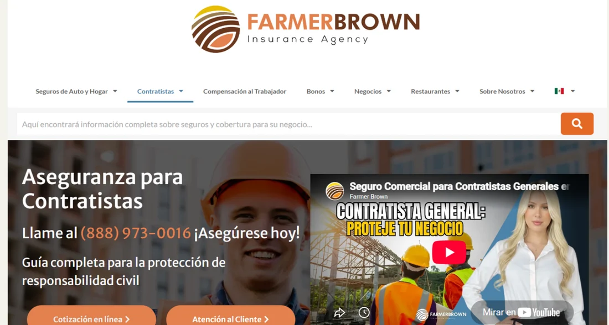
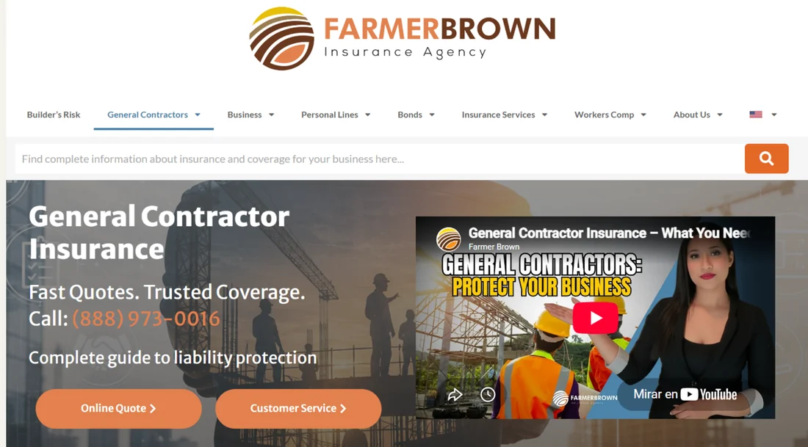

01WordPress · Elementor · Divi
Farmer Brown Insurance
Implementación y actualización de contenido ES/EN, estructura de landing pages, SEO on-page, QA y coordinación con diseño y desarrollo.
EN/ES content implementation, landing-page structure, on-page SEO, QA and coordination with design and development teams.